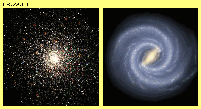
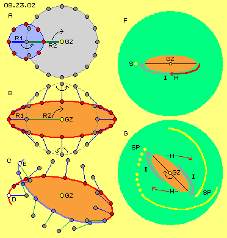
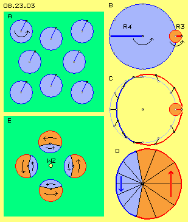
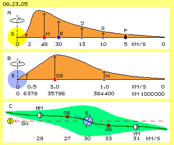
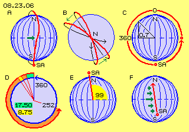
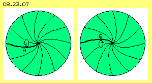
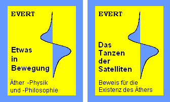

Vor zwanzig Jahren schon hatte ich meine Website ins Netz gestellt als einer der ersten privaten Anbieter wissenschaftlicher Inhalte. Im Laufe der Zeit hatte ich viele Artikel zur Alternativen Physik sowie Untersuchungen und Vorschläge zur Generierung Freier Energie veröffentlicht. Darunter waren gewiss sehr gute Arbeiten. Insgesamt aber hatten die Ansätze so wenig realen Erfolg, wie auch Tausende Kollegen weltweit leider noch immer keine wirklich brauchbare Maschine realisieren konnten.
Das Internet vergisst nichts. Darum liegt es an jedem Anbieter, seine überholten Beiträge zu löschen. Ich werde darum in 2018 meine Website www.evert.de komplett vom Netz nehmen.
Im Internet haben auch ein paar Tausend Autoren zum Thema Äther veröffentlicht, meist aus esoterischer Sicht und ohne präzise Definitionen. Nur ganz wenige Autoren gehen das Thema in streng physikalischer Sichtweise an. Meine Arbeit dürfte dabei wohl der radikalste Ansatz sein. Ich konnte damit hundert physikalische ´Phänomene´ erklären - aber praktisch keinen einzigen Physiker überzeugen. Darum werde ich auch meine ´Äther-Physik und -Philosophie´ nächstens aus dem Netz und vom Buchmarkt nehmen.

Beispiel: Gravitations-Problem und -LösungTrotz neuer Erkenntnisse in der Physik, blieben in allen Bereichen essentielle Fragen ungeklärt, beispielsweise: was ist ein Photon oder ein Elektron? Wie ist das seltsame Verhalten der Subelementarteilchen zu verstehen und woraus bestehen sie? Was sollen Dunkle Materie / Energie sein oder wie können Kräfte durch ein Nichts hindurch wirken? Ist die Vorstellung einer universumweit wirksamen Massen-Anziehungskraft haltbar?
Nach gängiger Lehre kann eine Galaxis nur bestehen als ein sensibles Gleichgewicht zwischen zentripetalen und zentrifugalen Kräften. Um den Zusammenhalt zu garantieren, werden notfalls riesige ´Schwarze Löcher´ unterstellt. Andererseits gibt es jede Menge Kugelsternhaufen, bis zur Größe kleiner Galaxien, bei denen keine Rotationsbewegung gegeben ist (Bild 08.23.01, links). Also müssten diese Ansammlungen von Sternen schon längst kollabiert sein. Also darf man, schlicht und einfach, keine universell wirksame Gravitation in Form einer Massen-Anziehungskraft unterstellen.
Aber auch die häufige Erscheinung einer Spiral-Galaxis lässt sich so nicht erklären, schon gar nicht mit einem ´Balken´ durch das Zentrum (Bild 08.23.01, rechts). Erst wenn man anstelle des Nichts (oder Dunkler Materie) eine sich bewegende Äthersubstanz unterstellt, ergeben sich plausible Erklärungen.

In Bild 08.23.02 ist oben links bei A ein ´Äther-Wirbelsturm´ mit Radius R1 linksdrehend dargestellt. Ein beobachteter Teil (rot) des Wirbels ist in 8 Positionen eingezeichnet. Das Zentrum (grau) des Wirbels wandert rechtsdrehend um das Galaktische Zentrum (GZ, gelb). Dieses Wirbelzentrum ist in 16 Positionen eingezeichnet. Während einer Umdrehung um das Galaktische Zentrum hat sich der Ätherwirbel zwei Mal um sein eigenes Zentrum gedreht.Links mittig bei B sind beide Bewegungen kombiniert. Die beobachtete Position (rot) bewegt sich auf einer elliptischen Bahn, vom Scheitel zur Mitte stark beschleunigt, dann wieder verzögert (siehe Abstände der roten Punkte). Links unten bei C rotiert der Ätherwirbel etwas schneller. Der Scheitelpunkt (weis) wandert dann von D nach E, also rechtsdrehend um das Galaktische Zentrum.
Oben rechts bei F ist in einer Galaxis (hellgrün) der zentrale Bereich eines Balkens (hellrot) eingezeichnet. Beschleunigte Ätherbewegung herrscht vom Scheitel bis zur Mitte (roter Pfeil H), in welcher Sterne mit gespült werden. Von der Mitte zum nächsten Scheitel wird die Ätherbewegung wieder langsamer (grauer Pfeil I), ein mitgeführter Stern (S, gelb) wird dort außen ´abgelegt´.
Unten rechts bei G ist der Balken während seiner Drehung dargestellt, wobei dessen Scheitel rechtsdrehend um das Galaktische Zentrum (GZ, gelb) wandern. Jeweils am Ende der verzögerten Bewegung (Pfeile I) werden Sterne abgelegt, woraus sich die Spiralarme (SP, gelb) ergeben. Durch die beschleunigte Phasen (Pfeile H) werden zugleich die Sterne aus dem Bereich seitlich vom Balken heraus und weiter auswärts gespült. Im Balken selbst werden Sterne durcheinander gewirbelt, bleiben aber in diesem Bereich ´gefangen´.
Je nach Relation der Radien, des Drehsinns und der Drehgeschwindigkeit ergeben sich unterschiedliche Bahnverläufe. Für jede Galaxie lässt sich ein exaktes Bewegungsmuster ermitteln, aus dem sich die Verteilung der Sterne sowie die Richtungen und Geschwindigkeiten ihrer unterschiedlichen Bewegungen ergeben. Es ist keine Masse-Anziehung erforderlich, die Sterne driften rein passiv im Ätherwind, der praktisch wie eine ´Kehrmaschine´ arbeitet. Das dürfte für jedermann eine plausible Erklärung sein, eben so wie es diese ´Strömungsbilder´ augenscheinlich aufzeigen. Für gelernte Astronomen aber ist das eine Horror-Vorstellung, weil damit der Bedarf an Schwarzen Löchern und Dunkler Materie / Energie ersatzlos entfällt.
Dennoch fällt der Apfel vom Baum hinunter auf die Erde, was aber eine ganz andere Ursache hat. Diese spannende Geschichte ist als eines der hundert Phänomene im Buch ´Etwas in Bewegung´ (ISBN 978-3-8423-6238-3) ausführlich beschrieben.

Problem ÄtherwindBesonders im 19.Jahrhundert wurde diskutiert, ob es einen Ätherwind geben könnte und wie er zu messen sei. Man war sich einig, dass die hohe Geschwindigkeit des Lichtes nur in einem extrem dichten Medium möglich ist. Weil Licht selbst auf lange Distanz praktisch keine Schwächung aufweist, darf der Äther nicht elastisch sein und nicht aus einzelnen Teilchen bestehen (im Gegensatz z.B. zur Luft mit der geringen Tragweite des Schalls). Aufgrund weiterer Indizien gehe ich davon aus, dass der Äther universumweit eine einzige, lückenlose Substanz bildet, ein wirklich homogenes Plasma ist.
Damit sind natürlich die Bewegungsmöglichkeiten extrem eingeschränkt, z.B. indem der Abstand benachbarter ´Ätherpunkte´ (es gibt keine Äther-´Teilchen´) immer konstant sein muss. In Bild 08.23.03 oben links bei A bewegt sich z.B. ein Ätherpunkt (schwarz) auf einer kreisförmigen Bahn, wobei alle benachbarten Ätherpunkte synchron dazu schwingen müssen.
Weil sich meist viele Bewegungen überlagern, gibt es real kaum exakte Kreisbahnen. Oben rechts bei B bewegt sich z.B. ein beobachteter Punkt linksdrehend auf einem Kreis mit Radius R3 (rot). Dessen Mittelpunkt bewegt sich seinerseits auf einem Kreis mit Radius R4 (blau), in gleichem Drehsinn und mit gleicher Winkelgeschwindigkeit. Bei C ist die resultierende Bahn skizziert: der beobachtete Punkt fliegt in einem weiten Bogen (rot) aufwärts und kommt in einer flachen Kurve (blau) wieder zurück zu seinem originären Ort.
Unten rechts bei D ist mit zwölf Sektionen noch einmal verdeutlicht: in der ersten Hälfte der Zeit (rot) legt der Ätherpunkt relativ lange Strecken relativ schnell zurück und in der zweiten Zeit-Hälfte (blau) entsprechend kürzere Strecken entsprechend langsamer. Durch die einfache Überlagerung zweier Kreisbewegungen entstehen also eine ungleichförmige Bahn mit Abschnitten unterschiedlicher Geschwindigkeit, d.h. eine ´Bewegung mit Schlag´. Je nach Relation der Radien ist die schlagende Komponente stärker oder schwächer.
Diese Schläge können nicht wahllos überall hin gerichtet sein (überall befindet sind bereits Äther, der sich Änderungen widersetzt). Es ist ein zwingendes Merkmal im lückenlosen Äther, dass alle Vorgänge innerhalb einer lokalen Einheit in sich geschlossen sein müssen. Das ist z.B. gegeben (links bei E), wenn die schlagende Komponente (rot) jeweils tangential um ein Wirbelzentrum (WZ, gelb) herum erfolgt, jeweils gleichzeitig und synchron. Ebenso zwingend ist, dass jeder Ätherpunkt letztlich zurück kehrt zu seinem Ausgangspunkt. Das kann langsamer (blau) erfolgen, aber wiederum synchron rundum.
 In diesem extrem dichten Medium kann es also keine weiträumige Verlagerung von Äther geben. Dieser bleibt im Prinzip ortsfest und ist nur auf engem Raum schwingend, allerdings nicht total gleichförmig und gleichartig, sondern mit unterschiedlich starken Abweichungen. Obige Sterne werden also nicht durch ´Ätherwinde´ vorwärts geschoben durch die Galaxis. Vielmehr wird jedes Atome durch ein Schwingen mit ´schlagender Komponente´ vorwärts geschupst, wie in Bild 08.23.04 skizziert ist.
In diesem extrem dichten Medium kann es also keine weiträumige Verlagerung von Äther geben. Dieser bleibt im Prinzip ortsfest und ist nur auf engem Raum schwingend, allerdings nicht total gleichförmig und gleichartig, sondern mit unterschiedlich starken Abweichungen. Obige Sterne werden also nicht durch ´Ätherwinde´ vorwärts geschoben durch die Galaxis. Vielmehr wird jedes Atome durch ein Schwingen mit ´schlagender Komponente´ vorwärts geschupst, wie in Bild 08.23.04 skizziert ist.
Ein Atom ist eine lokale Einheit mit intern speziellem Bewegungsmuster (bei A nur angedeutet durch eine S-förmige Kurve). Aufgrund innerer und äußerer Zwänge hat ein Atom nahezu kugelförmige Gestalt. Wenn das obige Schlagen (rote Pfeile bei B) auf das Atom trifft, wird seine Kontur etwas deformiert. In der Phase des langsamen Rückschwingens (blaue Pfeile bei C) kann das Atom wieder seine ursprüngliche Form annehmen. Allerdings ist danach sein Mittelpunkt (schwarz) leicht nach oben versetzt.
Wirbelsysteme der Milchstrasse, Sonne und Erde
In einer Galaxis werden die Sterne auf sehr differenzierten Bahnen herum geschoben. Sehr viel einfacher ist dagegen der Ätherwirbel unseres Sonnensystems: die ganze Ekliptik ist ein Schwingen mit einfacher Überlagerung (wie oben bei Bild 08.23.03 diskutiert). Durch die schlagende Komponente werden die Planeten rund um die Sonne geschoben, von außen nach innen mit zunehmender Drehgeschwindigkeit (siehe Bild 08.23.05 oben bei A): z.B. Pluto (P, grau) mit 5 km/s, die Erde (E, blau) mit rund 30 km/s und Merkur (M, rot) mit maximal 48 km/s. Weiter zur Sonne hin wird das Schlagen schwächer, so dass die Sonnen-Oberfläche (S, gelb) nurmehr mit 2 km/s rotiert.

Eingebettet in das Sonnen-Wirbelsystem ist der Ätherwirbel der Erde (siehe Bild 08.23.05 mittig bei B). Dieser besteht wiederum in Form obigen Schwingens mit einfacher Überlagerung, wiederum als eine flache linsenförmige Scheibe, mit einem Radius von etwa 1 Million Kilometer. Am Radius von etwa 400.000 km wird der Mond (M, grau) mit rund 1 km/s vorwärts geschoben. Am Radius von etwa 40.000 km driften die Geostationären Satelliten (GS, rot) mit etwa 3 km/s. Von dort bis zum Mittelpunkt der Erde (E, blau) bzw. zur Drehachse des Erde-Wirbelsystems nimmt die Drehgeschwindigkeit linear ab auf 0 km/s.Unten bei C ist der Ätherwirbel (grün) der Erde (E, blau) im Querschnitt skizziert. Die linsenförmige Scheibe liegt etwas geneigt zur Ebene des Sonnenwirbels (SW, mit der Sonne S weit links). Die Scheibe steht auch nicht genau senkrecht auf der Erdachse. Beide Wirbelsysteme sind linksdrehend, so dass die schlagende Komponenten sich addieren auf der sonnen-abgewandten Seite bzw. reduzieren auf der sonnen-zugewandten Seite. Neu- und Vollmond (NM und VM) bewegen sich unterschiedlich schnell im Raum und ebenso die Geostationären Satelliten. Darum ist der Mond am Himmel immer wieder in anderer Position zu sehen. Auch diese Satelliten stehen keinesfalls ´bewegungslos´ in ihrer Position über dem Äquator. Die damit gegebene Problematik ist ausführlich beschreiben im Buch ´Das Tanzen der Satelliten´ (ISBN 978-3-7322-9398-8).
Es ist noch einmal festzustellen, dass für diese Bewegungsabläufe keine Massen-Anziehungskraft erforderlich ist. Andererseits konnte früher ein vermeintlicher Ätherwind niemals befriedigend gemessen werden, eben weil die schlagende Komponente an einer Stelle der Erdoberfläche die dortigen Atome der Erde, des Beobachters und des Messgerätes in gleicher Weise tangiert, also keine Relativ-Bewegung zu messen ist. Es war aber ein fataler Fehlschluss, seit einhundert Jahren die Existenz des Äthers pauschal zu negieren. Heute liegen täglich Messergebnisse zur Wirkung des ´Ätherwindes´ vor. Aber das Dogma ´es gibt keinen Äther´ macht es Physikern unmöglich, die neuen Erkenntnisse zu registrieren oder gar darüber nachzudenken.
Ultimativer Beweis für die Existenz des Äthers
Die Raumfahrtbranche feiert regelmäßig ihre Erfolge, wenngleich sie oft an try-and-error oder gar an Pleiten-Pech-und-Pannen erinnert (siehe z.B. die Mars-Sonden oder nun die verspätete Inbetriebnahme des Europäischen Navigations-Systems Galileo). Auch die Satelliten zur Erdbeobachtung bewegen sich auf Bahnen, die nur schwerlich mit gängigen Vorstellungen zu erklären sind. Die Problematik ist ausführlich beschrieben in meiner Website bzw. im Buch ´Das Tanzen der Satelliten´. Nachfolgend sind nur die wichtigsten Ergebnisse in Kürze angeführt.
Landsat-Satelliten fliegen in Höhen von 650 bis 900 km alle 100 Minuten einmal um die Erde, fast 15 mal je Tag. Optimal ist ein Orbit über die Pole, immer quer zur Sonne ausgerichtet. Dieser sonnen-synchrone Orbit kann jahrelang gehalten werden, wenn dem Satelliten beim Start ein Impuls im Drehsinn der Erde mitgegeben wird, so dass seine Bahn pro Tag etwa um ein Grad geschwenkt wird. Sofern nur die irdische Schwerkraft und die Massen-Trägheit wirksam wären, würden sich diese Satelliten unverändert auf solch stabilen Bahnen bewegen.

Die tatsächliche Bahn ist in Bild 08.23.06 dargestellt. Links oben bei A fliegt ein Satellit (SA, rot), von unterhalb des Südpol S kommend, hoch zum Nordpol N. Seine Bahn wird ´wie von Geisterhand´ (siehe grüner Pfeil) zunehmend und dann wieder weniger stark nach Osten abgelenkt. Oben mittig bei B ist ein Blick auf den Nordpol skizziert: die Bahn verlagert sich bei jedem Umlauf im Drehsinn der Erde.Diese ´gewendelte Rotation´ ist nach der Schulphysik unmöglich (siehe z.B. die Reaktion eines Gyroskops, wenn man seine Drehachse im Raum schwenkt). Diese Kombination von Rotationen ist nach den Gesetzen der Himmelsmechanik unmöglich (es gibt keinen Planeten und Mond, die derart um ein Zentrum schlingern). Entsprechend vage sind die Erklärungs-versuche, z.B. dass ´die Gravitationswirkung des Äquatorwulstes´ ein Drehmoment auf die Bahnebene ausüben könne. Es wurden Formeln gebildet, z.B. wp=(3a^2/2r^2)*w*cos(i)*J2), wobei J2 als ´Koeffizient des Erdentwicklungspotentials´ mit -1.083*10^-3 enthalten ist (bitte im Internet nachvollziehen, sofern möglich).
Im Bild oben rechts bei C ist die einfache Erklärung dieser Erscheinung skizziert. Im Bereich der Pole (bzw. nahe zur Systemachse des Erde-Ätherwirbels) ist die schlagende Komponente des Schwingens gering, d.h. dort werden die Satelliten nur wenig abgelenkt. Im Bereich des Äquators werden die Satelliten maximal abgelenkt, entsprechend zur dortigen Drehbewegung der Erde. Indem die Satelliten also Bereiche unterschiedlichen ´Ätherwindes´ durchlaufen, werden sie in etwa nur 0.7 der täglichen Erd-Umdrehung mitgeführt.
Unten links bei D ist das schematisch dargestellt: die Erde dreht je Tag um 360 Grad (blauer Pfeil). Ein Satellit wird 0.7 * 360 = etwa 252 Grad mitgeführt. Bei 14.4 Umläufen sind das 17.5 Grad / Umlauf. Die Abweichung erfolgt aufwärts und abwärts, d.h. die Bahn weist eine Abweichung von 8.75 Grad gegenüber einem Längengrad auf.
Der Satellit muss darum mit einer Inklination von 99 Grad (siehe E) auf eine Umlaufbahn geschossen werden, also gegen den Ätherwind gerichtet und gegen den Drehsinn der Erde (und damit im Gegensatz zu obigem theoretischen Ansatz nach gängiger Lehre). Aufgrund des unterschiedlich starken ´Seitenwindes´ wird er weiterhin auf eine gekrümmte Bahn abgelenkt (siehe F), insgesamt aber auf einem sonnen-synchronen Orbit fliegen.
Damit ist klar belegt, dass erstens dieser Äther existiert und zweitens, dass sich dieser in Form eines Whirlpools um die Erde bewegt. Es kann aber nicht ein beliebiger Äther sein (wie viele Autoren diesen Begriff ohne klare Definition gebrauchen bzw. missbrauchen). Dieser Äther ist vielmehr die einzige real existente Substanz - und hat die einzigartige Eigenschaft, ein teilchenloses und damit lückenloses und inkompressibles Ganzes zu sein. Das steht in krassem Gegensatz zu unseren Erfahrungen in der ´materiellen Teilchenwelt´. Das Verhalten dieser Satelliten beweist aber eben diese Eigenschaft.
Materie, Felder, Energie
Woraus nun aber besteht Materie bzw. jedes einzelne Atom? Die Antwort ist: Alles besteht aus dem Einen. Zumindest ist das die Kern-Aussage vieler alter Weisheitslehren. Es gibt universumweit und lückenlos nur diese eine Ursubstanz des Äthers. Also bestehen auch alle Atome komplett aus diesem einheitlichen Äther. Der einzige Unterschied besteht darin, dass der Äther in lokalen Bereichen in spezifischen Mustern schwingen kann. Die Bewegungen müssen in sich ausgeglichen sein und absolut synchron verlaufen. Nur etwa diese hundert chemischen Elemente sind stabil genug. Die materielle Welt besteht zum großen Teil nur aus ganz wenigen Elementen. Früher wusste man nicht, wie sich ´harte Materie´ durch dichten Äther sollte hindurch bewegen können. Es gibt keine harten Teilchen in Bewegung. Es wandern immer nur Bewegungsmuster durch den nahezu ortfesten Äther vorwärts.
Die Quanten-Physiker haben ein paar Tausend Subelementarteilchen nach gewissen Eigenschaften katalogisiert. Aber es gibt keine ´Teilchen´, vielmehr wurden Bahnabschnitte der Ätherbewegungen in den Atomen erkannt. Selbstverständlich bestehen diese nur kurze Zeit und die dreidimensionalen Kurven gehen fortwährend in andere über. Ein Atom besteht also nicht aus leerem Raum, ein paar Elektronen und im Kern aus einigen Neutronen- und Positronen-Teilchen (abgesehen davon, dass es generell keine positive Ladung gibt, sondern nur mehr oder weniger viel negative Ladung). Für die Entwicklung neuer Technologien wäre außerordentlich wichtig, den Eigenschaften der ´Materie´ konkrete Bewegungsmuster des Äthers zuordnen zu können.

Das gilt in besonderem Maße für alle Erscheinungen des Elektromagnetismus. Welche Bewegungsmuster beschreiben ein Elektron? Meine Vorstellung ist in Bild 08.23.07 skizziert: von außen ist rundum nur linksdrehendes Schwingen zu sehen, was ein absolut stabiles Gebilde repräsentiert. Analog müsste ergründet werden, welche Muster negative Ladung sind, welche Arten von elektrischem Strom gibt es, wie die Kräfte elektrischer und magnetischer Felder konkret sich darstellen. In der Elektrotechnik werden schon immer die Bewegungen des Äthers manipuliert. Aber erst wenn man die im Hintergrund ablaufenden tatsächlichen Prozesse beachtet, wird man wirklich effektive Maschinen bauen können.
 Lokale Differenzen im omnipräsenten Äther sind nur durch unterschiedliche Bewegungsmuster vorhanden. Alle Formen von Energie sind letztlich also nur in der Bewegung von Äther begründet. Aller Äther stellt ein unendlich großes ´Meer an Energie´ dar. Selbstverständlich ließen sich daraus brauchbare Energien ableiten, sofern man endlich den Äther als Studien-Objekt der Wissenschaften akzeptieren würde.
Lokale Differenzen im omnipräsenten Äther sind nur durch unterschiedliche Bewegungsmuster vorhanden. Alle Formen von Energie sind letztlich also nur in der Bewegung von Äther begründet. Aller Äther stellt ein unendlich großes ´Meer an Energie´ dar. Selbstverständlich ließen sich daraus brauchbare Energien ableiten, sofern man endlich den Äther als Studien-Objekt der Wissenschaften akzeptieren würde.
Wissen, Geist, Seele
In den Naturwissenschaften gilt nur als real, was sich zählen, wiegen und messen lässt. Alle anderen Erscheinungen gelten als irgendwie abstrakt, geisterhaft und unbestimmt. Dabei erfährt doch jeder Mensch sein ´Ich´ so konkret wie seinen materiellen Körper. Die seelische Verfassung hat gravierenden Einfluss auf diesen Körper. Generell hat das Geistige sehr wohl Einfluss auf Materielles. Das ist selbstverständlich, weil beides Manifestationen im gemeinsamen Medium des Äther sind.
Der britische Biologe Rupert Sheldrake hat mit seinen Experimenten zweifelsfrei nachgewiesen, dass eine Gruppe von Tieren neues Wissen in ´morphische Felder´ einbringen und andere, davon vollkommen unabhängige Tiere dieses Wissen ´anzapfen´ können. Auch wenn es kaum bewusst praktiziert wird: wir alle speisen mit unseren Gedanken und Gefühlen einen riesige Speicher und je nach Fokussierung kann auch jeder Inhalte daraus abrufen. Diese Prozesse können nicht nur irgendwie abstrakt vonstatten gehen und der Speicher muss ein reales Medium sein. Es gibt real nur eine Substanz. Und dieser Äther hat unendliches Potential für Schwingungen aller Art.
Es könnte allerdings einen Unterschied geben: trotz eines fließenden Übergangs zum umgebenden Äther bilden die Atome und physikalische Erscheinungen differenzierte, lokal begrenzte Einheiten. Im praktisch ortsfesten Äther sind diese Bewegungsmuster pausenlos unterwegs: sie taumeln mit der Milchstrasse durch das All, umrunden die Sonne, rotieren mit der Erde und wandern auf dieser herum. Umgekehrt könnte sehr wohl sein, dass obige ´immateriellen´ Erscheinungen zugleich überall sind. Wenn irgendwo im Äther eine Bewegung erfolgt, wird sie in diesem lückenlosen Medium überall hin ausstrahlen, zumindest in schwächerer Ausprägung. Durch starke Gefühle oder Fokussierung könnte anderswo Energie eingebracht werden und als Verstärker die Inhalte wieder deutlich in Erscheinung treten lassen. In diesem Sinne könnte dieser Äther tatsächlich als ein holographischer Speicher arbeiten.

Insofern ist dieser Äther sowohl für die Natur- wie für die Geistes-wissenschaften ein höchst interessantes Studienobjekt. Für mich konkret liegt folgendes an: mein materieller Körper funktioniert zunehmend schwächer, in relativ absehbarer Zeit werde ich ´auf die andere Seite´ gehen. Meine Seele freut sich schon, alte Freunde wieder zu treffen. Mein ´Ich´ hätte momentan keine Lust, umgehend wieder zu inkarnieren. Aber in ein paar Jahrzehnten wäre ich wohl sehr interessiert, bei welchem Stand der Äther-Diskussion wieder einzusteigen wäre - oder ob bis dahin eine völlig neue Äther-Technologie bislang ungeahnte Möglichkeiten eröffnet hat.Für den Fall, dass irgendjemand dieses Thema voran treiben und meine Überlegungen einbeziehen wollte, sollte man die evert-website downloaden oder die Bücher beschaffen. Weil ich eben in absehbarer Zeit zumindest die Bühne des Internets und des Buchmarktes rückstandsfrei verlassen möchte. Alles Gute, Servus.
01.12.2017 / Fred Evert
| 08. Etwas in Bewegung |